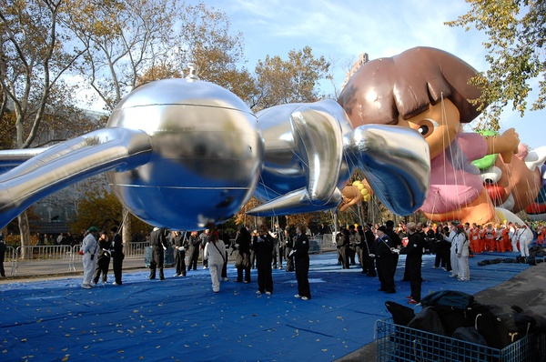

Rabbit isn't a painting, it's actually a series of three identical stainless steel sculptures made by Jeff Koons in 1986. The rabbits are cute yet imposing, and are minimalist but have cartoonish features. One of these sculptures holds the record for most expensive artwork sold by a living artist at auction.
Each sculpture is 3 feet tall and made out of stainless steel. Koons used artistic techniques like installation, photography, painting and sculpture in all materials for this artwork. In fact, the reason it was so expensive was because of the techniques and materials he used to make the sculpture.
In 2007, Jeff Koons teamed up with Macy's to produce a balloon based on Rabbit. It was about 54 feet tall and could be filled with 4650 feet³ of helium. If flew in the 2007 Macy's Thanksgiving Day Parade.
The sculptures were given to Koons’ art dealer, Ileana Sonnabend, who kept one edition and sold the other two to Charles Saatchi and Terry Winters for $40,000 each. The prices for the sculptures consistently increased. Charles Saatchi sold his edition to Stefan Edlis for $945,000, and around the same time, Winters sold his edition to Samuel Irving Newhouse Jr. for $1 million. Finally, in 2019, Newhouse auctioned his sculpture at Christie’s, and it was bought for $91.1 million by Robert Mnuchin.